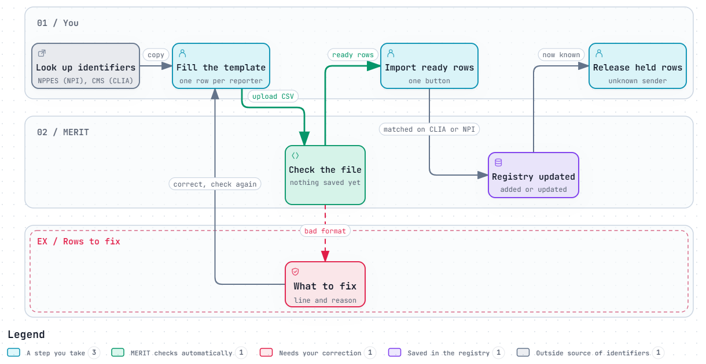
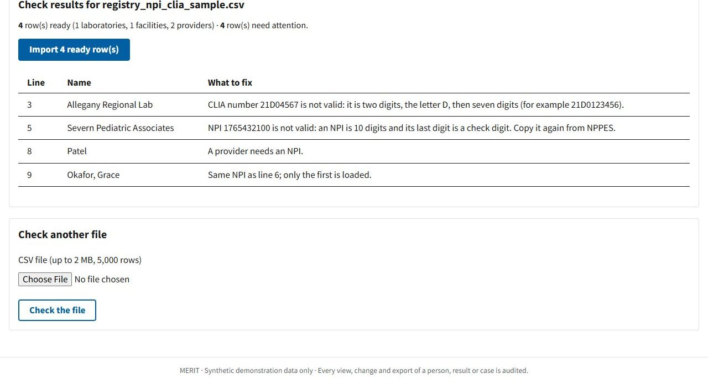

How to load laboratories, ordering facilities and providers into MERIT's reporter registry from a spreadsheet, check the file before anything is saved, fix the rows MERIT cannot load, and clear the results that were waiting for them.
In one minute
Open Reporters → Import NPI and CLIA records and download the CSV template.
Fill in one row per laboratory, facility or provider: its type, name, and its CLIA number or NPI.
Click Check the file. Nothing is saved yet: MERIT lists the ready rows and explains every row it cannot load.
Click Import. Ready rows are added, or update the entry with the same CLIA number or NPI.
Fix the other rows and check again. Then release any results held as unknown sender.
Who can import: people with the Edit the reporter registry permission (intake clerks, supervisors and administrators). Everyone who can see people can search the registry. A practice file, sourceCode/samples/registry_npi_clia_sample.csv, comes with MERIT.
Every blood test result in MERIT names the laboratory that ran it and, usually, the facility and provider who ordered it. The reporter registry is MERIT's list of them, each identified by a national number:
Kind
Examples
Identified by
Why MERIT needs it
Laboratory
A reference laboratory, a hospital laboratory
CLIA number (required); NPI optional
Intake links every result to its laboratory by CLIA number. A result from a laboratory that is not registered is held as unknown sender.
Facility
A pediatric practice, a clinic, a hospital, a health center
NPI (organization) or CLIA number
Shows who ordered the test, for follow-up calls and the reporter timeliness report.
Provider
A physician, nurse practitioner or physician assistant
NPI (individual)
Links the ordering provider on each result, for confirmatory test and prenatal notifications.
2. NPI and CLIA numbers in brief
NPI: National Provider Identifier
1245319599
10 digits, no letters.
The last digit is a check digit. One wrong or swapped digit almost always fails it, so MERIT catches most typing mistakes.
Individuals and organizations each have their own NPI.
Look one up in the national NPPES NPI Registry (npiregistry.cms.hhs.gov).
CLIA number
21D0123456
Two digits, the letter D, then seven digits: ten characters.
Issued by CMS to every laboratory that tests human specimens.
Laboratories print it on their reports; you can also look it up with CMS's CLIA laboratory search.
Providers do not have CLIA numbers.
MERIT ignores spaces and hyphens in both (21D-0123456 and 1245 319 599 are accepted) and accepts a lower-case d.

The import workflow. Interactive version: docs/npi-clia-import_workflow.html.
3. Prepare the file
Open Reporters and click Import NPI and CLIA records.
Click Download the CSV template. It has the column names and one example of each kind.
Open it in Excel or another spreadsheet. Replace the examples with your rows: one row per laboratory, facility or provider.
Save as CSV (in Excel: File → Save As → CSV UTF-8 (Comma delimited)). Keep the first line, the column names, unchanged.
The columns
Column
What to put in it
Laboratory
Facility
Provider
type
laboratory, facility or provider
Required
Required
Required
name
Laboratory or facility name, as it should appear in MERIT (up to 120 characters)
Required
Required
Leave blank
lastName, firstName
The provider's name
Leave blank
Leave blank
Last name required
credential
MD, DO, NP, PA…
Optional
npi
10-digit NPI
Optional
NPI or CLIA
Required
clia
CLIA number, for example 21D0123456
Required
NPI or CLIA
Must be blank
phone
Main phone number, for follow-up calls
Optional
Optional
An example
type,name,lastName,firstName,credential,npi,clia,phone
laboratory,Tidewater Clinical Laboratory,,,,,21D0456789,410-555-0170
facility,Patapsco Family Health Center,,,,1987654328,,410-555-0188
provider,,Okafor,Grace,MD,1543210987,,
Spreadsheet tips. Keep NPIs as plain 10-digit numbers: if Excel shows 1.24532E+09, widen the column or format it as Text before saving. Do not add total rows, notes or extra header lines. Up to 5,000 rows and 2 MB per file; split bigger lists.
4. Check the file
On the import page, under Choose the file, click Choose File and pick your CSV.
Click Check the file. Nothing is saved yet.
Read the summary: how many rows are ready (by kind) and how many need attention. Each row that needs attention is listed with its line number in the file and what to fix.

Checking the practice file: four rows ready, four to fix.
What the messages mean
Message
What to do
NPI … is not valid: an NPI is 10 digits and its last digit is a check digit
A digit is wrong or missing. Copy the NPI again from the NPPES NPI Registry.
CLIA number … is not valid: it is two digits, the letter D, then seven digits
Usually a digit is missing or the letter is not D. Copy it from the laboratory report or the CMS search.
A laboratory needs its CLIA number
Fill in clia. If you only have an NPI, the row is probably a facility: change type.
A facility needs an NPI or a CLIA number
Fill in one of them.
A provider needs an NPI / a last name
Fill in the missing column. Providers without an NPI cannot be registered.
Providers have no CLIA number; leave clia blank
Clear the clia cell, or change type to laboratory.
Same NPI (or CLIA number) as line …; only the first is loaded
The file lists the same reporter twice. Delete the duplicate row, or keep it if the first is correct.
Type must be laboratory, facility or provider
Check the spelling in the type column.
… is longer than … characters
Shorten the name, credential or phone.
5. Import
When the ready rows look right, click Import n ready row(s).
MERIT shows how many entries were added and how many updated, and lists the rows it did not load.
Fix those rows in your spreadsheet. Save, then check and import the file again. Rows already loaded are simply updated again, so re-importing the whole file is safe.
How MERIT decides "add" or "update"
Laboratories and facilities are matched on their CLIA number first, then their NPI. A match is updated with the new name and phone; otherwise a new entry is added.
Providers are matched on their NPI.
Blank cells never erase what is stored. To remove a phone number or end a reporter, ask your administrator.
The check is valid for 30 minutes. If you wait longer, MERIT asks you to check the file again before importing. That way the rows imported are always the rows you just reviewed.
6. After the import: release the held results
Results that arrived before their laboratory was registered are waiting on Held records with the cause unknown sender.
Open Held records and click the Unknown sender group for that laboratory.
Tick the rows (or the box at the top of the table for all of them) and click Release selected.
MERIT checks them again. Now that the laboratory is known they load, or wait for another cause such as match review.
To confirm an entry, search for it on Reporters by name, CLIA number or NPI.
7. Adding or correcting one entry
For a single new laboratory or a corrected name you do not need a file.
Reporters: search by name, CLIA number or NPI, and filter by kind. The Add or correct one entry form is below the table.
Open Reporters and search for the reporter first.
Under Add or correct one entry, choose the Kind and fill in the name and identifiers.
Click Save entry. The same rules apply as for a file: identifiers are checked, and an entry with the same CLIA number or NPI is updated.
8. Good practice
Register a laboratory before its first file arrives when a new laboratory starts reporting. Ask your administrator to set up its intake profile at the same time.
Once a month, open Reports → Reporter timeliness and completeness to find reporters that send late or leave fields blank.
Keep one master spreadsheet of your reporters and re-import it after big changes, such as a hospital system merger. Re-importing updates; it never duplicates.
Use the names people recognize, for example "Harbor Pediatrics - Dundalk" for one branch of a practice.
9. Common questions
I imported the same file twice. Do I now have duplicates? No. The second import updated the entries the first one added.
A laboratory has two CLIA numbers (two sites). Register each site as its own laboratory row, with its own CLIA number and a name that tells them apart.
The NPI is right but MERIT says the check digit is wrong. Check for a dropped or extra digit, or a cell that the spreadsheet changed (scientific notation, removed leading characters). Copy it again from the NPPES NPI Registry.
Can I import people's test results this way? No. This import is only for reporters. Results come in on Intake (see the Daily Operations guide).
The Import button is missing. Your role or profile does not include Edit the reporter registry. Ask your supervisor or administrator.
MERIT user guide: importing NPI and CLIA records. The examples use made-up reporters with identifiers that pass the format checks.